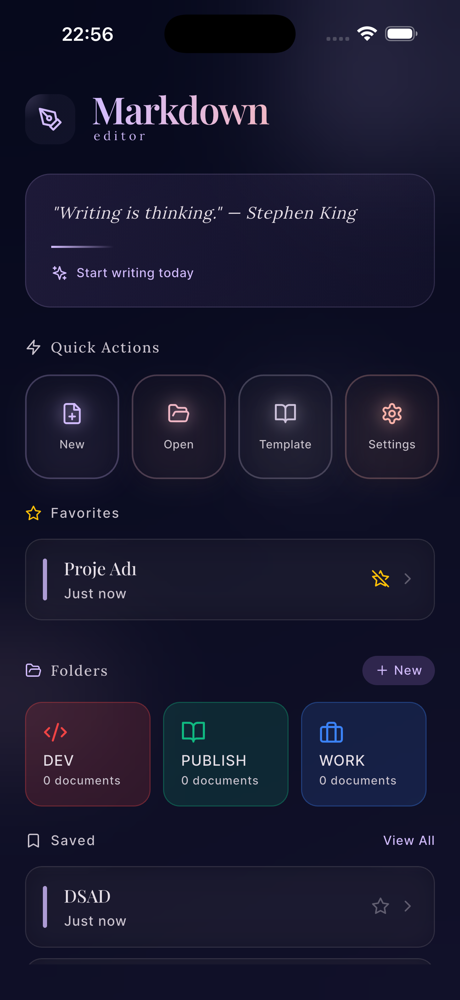
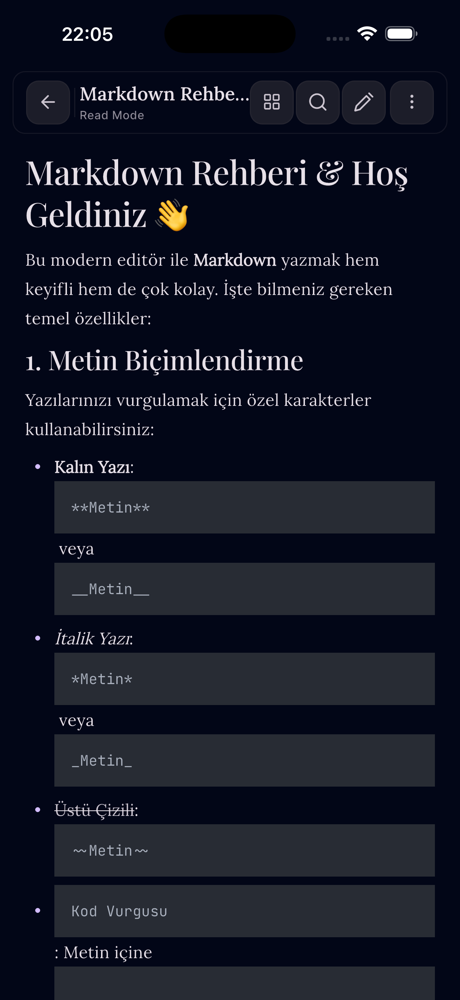
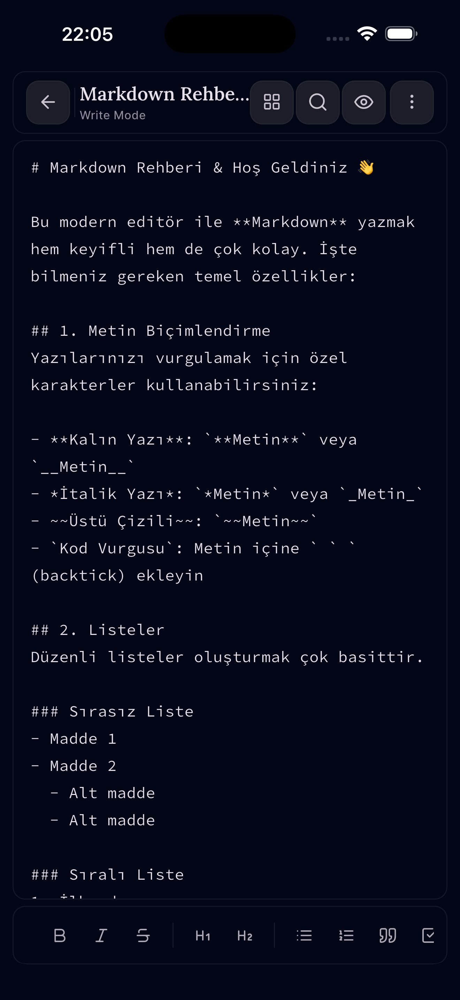

Yaz, önizle,
özgürce dışa aktar.
Gelişmiş Markdown düzenleme, anlık canlı önizleme, zengin kod renklendirme ve resmi PDF/HTML çıktısı.
Markdown Editor; geliştiriciler, teknik yazarlar ve not tutkunları için optimize edilmiştir. Tamamen çevrimdışı çalışarak verilerinizi cihazınızda güvende tutar.
PixelFlow Proje
✅ Temiz Mimari
✅ Yüksek Performans
Kusursuz Markdown yazma deneyimi
Minimalist ve dikkat dağıtmayan arayüzle metinlerinizi biçimlendirin.
Canlı İki Panel
Sol panelde kodunuzu yazarken sağ panelde eşzamanlı render çıktısını izleyin.
Sözdizimi Vurgulama
Dart, JavaScript, Python, JSON ve 40+ dil için entegre syntax highlighting.
PDF & HTML Çıktı
Notlarınızı temiz tipografik şablonlarla resmi PDF ve web HTML dosyası olarak kaydedin.
LaTeX & Formüller
Akademik formüller ve matematiksel denklemler için yerel KaTeX desteği.
%100 Çevrimdışı
Verileriniz asla harici sunuculara gitmez; dosyalarınız yalnızca cihazınızda yaşar.
Sıfır Reklam
Yazma sürecinizi bölen hiçbir banner veya reklam olmadan kesintisiz odaklanın.
Uygulamadan görünümler
Özenle tasarlanmış mobil ve masaüstü uyumlu editör görünümü.



Markdown Editor ile üretime başlayın
Güçlü, hafif ve çevrimdışı editörünüz elinizin altında.